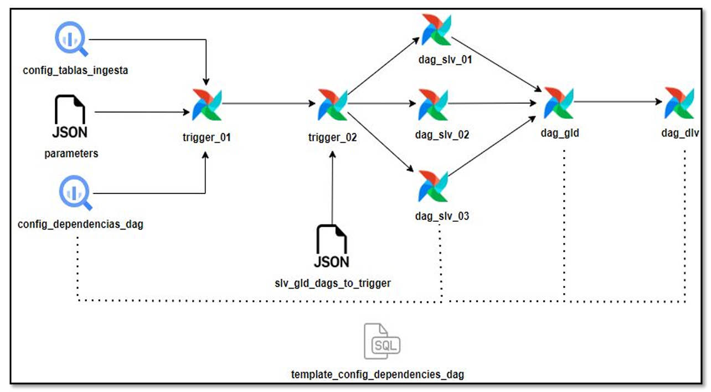
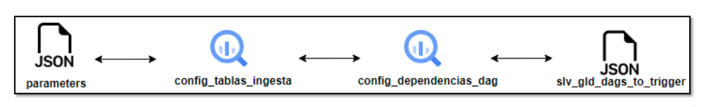
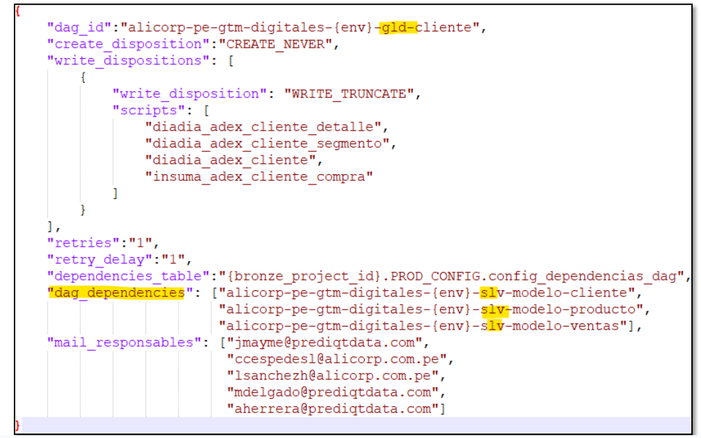
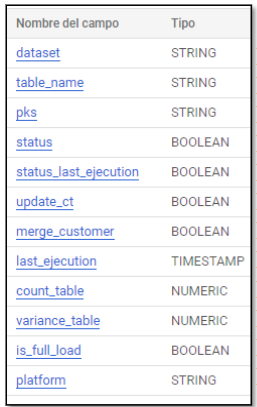
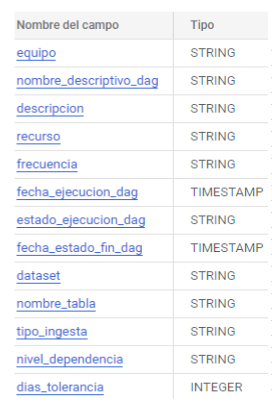
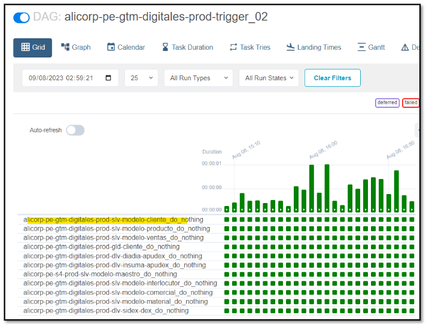

Dag - Execution
Índice
- Diagrama de Funcionamiento
- Diagrama de Registro de Nuevo DAG
- Archivo Parameters y Tablas de Ingesta - Dependencia
- Archivo Maestro de DAGs
Diagrama de Funcionamiento

-
El proceso inicia con la ejecución automática del dag trigger_01. Para ello, se apoya en la información de las tablas
config_tablas_ingesta,config_dependencias_dagy en el archivoparameters.json. -
Una vez terminado el trigger_01 (lógica de dependencias de dag), se ejecuta el dag trigger_02. Este dag realiza la ejecución en orden, según las dependencias de dag y por ambiente (silver, golden y delivery).
Diagrama de Registro de Nuevo DAG

-
Se debe registrar la dependencia entre dags en el archivo
parameters.jsonen el modelo nuevo. -
Luego se deben registrar las tablas que se crearon, ya sea en el ambiente silver, golden y delivery, y las tablas que se usen del ambiente bronze en la tabla
config_tablas_ingesta. En la tablaconfig_dependencias_dagse registra el nuevo dag y las tablas del ambiente anterior que se necesitan para que el dag se ejecute. -
Finalmente, se registra el nombre del nuevo dag en el archivo
slv_gld_dags_to_trigger.
Archivo Parameters y Tablas de Ingesta - Dependencia

En este archivo JSON se registran las dependencias entre dags. Solo se registra el nombre del dag, ya sea del mismo ambiente o del ambiente anterior, en la parte de dag_dependencies. Se toma como ejemplo el dag de gld cliente.
Ejemplo de Registro en el Archivo Parameters
El dag del ambiente golden, para que se ejecute correctamente y con la data actualizada, depende de 3 dags del ambiente anterior que es silver:
alicorp-pe-gtm-digitales-{env}-slv-modelo-clientealicorp-pe-gtm-digitales-{env}-slv-modelo-productoalicorp-pe-gtm-digitales-{env}-slv-modelo-ventas
Podría ser que también dependa de otro dag del ambiente golden. En ese caso, se debe registrar también el nombre del dag en la parte de dag_dependencies.
¿Dónde se encuentra el Archivo?
- El archivo se encuentra en la carpeta
dmldel modelo que se está desarrollando. - Debe ser creado tomando como referencia el archivo de otro modelo.
- Todo se trabaja a través de GitHub, donde se pueden encontrar los proyectos de Bronze, Silver y Golden y guiarse de los modelos existentes.
Tabla de Ingesta
Esta tabla contiene todos los nombres de las tablas que se usan en los dags, ya sean de bronze, silver, golden y delivery. Funciona como una tabla de monitoreo, ya que permite conocer qué tablas se usan en el Datalake.
Funcionamiento según Ambiente
- Si se ejecuta un dag de silver, la tabla contiene las tablas de bronze y silver que usa el dag.
- Si se ejecuta un dag de golden, contiene tablas de silver y golden.
- Si se ejecuta un dag de delivery, contiene tablas de golden y delivery.
Estructura de la Tabla de Ingesta
| Esquema | Descripción |
|---|---|
|  |
|
nota: No es necesario completar todas las columnas si no se tiene el detalle de cada una de ellas. El insert general que se utiliza es el siguiente:
Ejemplo de Insert
INSERT INTO `acpe-prod-brz.PROD_CONFIG.config_tablas_ingesta`
VALUES('PROD__SAPS4','t001k','',true,true,false,false,CURRENT_TIMESTAMP(),0,0,true,'SAPS4');
Campos indispensables
- Dataset
- Table_name
- Status_last_ejecution
- Si el valor es
true, no es necesario validar la fecha de la tabla en el campolast_ejecution. - Si es
false, se debe validar que la fecha enlast_ejecutionesté actualizada. - Este campo es esencial para la ejecución del DAG en silver; para golden y delivery puede ir en
true. - Last_ejecution
Indica la fecha de actualización de la tabla, con valor por defectoCURRENT_TIMESTAMP(). - Plataforma
Los otros campos puede ir con valores por defecto como se indica en el insert siguiente:
INSERT INTO `acpe-prod-brz.PROD_CONFIG.config_tablas_ingesta`
VALUES(‘{dataset}’,’{table_name}','',true,’{status_last_ejecution}',false,false,’{last_ejecution}',0,0,true,'{plataforma}');
Tabla de Dependencia
Esta tabla contiene los nombres de los dags que se ejecutan en el dag execution y cada dag contiene las tablas que se utilizan en la lógica de los dml(.sql), estas tablas deben estar registradas en la tabla config_tablas_ingesta para que el proceso de dag execution ejecute correctamente.
| Esquema | Descripción |
|---|---|
|  |
|
No es necesario completar todas las columnas si no se tiene el detalle de cada una de ellas. El insert general que se utiliza es el siguiente:
INSERT INTO `acpe-prod-brz.PROD_CONFIG.config_dependencias_dag`
VALUES
('SUPPLY','MODELO MAESTRO','tablas del modelo maestro','alicorp-pe-s4-dd-slv-modelo-maestro','DIARIA',CURRENT_TIMESTAMP(),'SUCCEEDED',CURRENT_TIMESTAMP(),'PROD__SAPS4','t001l','BRONZE','DIARIA',0);
Campos indispensables
- equipo
- nombre_descriptivo_dag
- descripción
- recurso
- dataset
- nombre_tabla
- tipo_ingesta
Los otros campos puede ir con valores por defecto como se indica en el insert siguiente:
INSERT INTO `acpe-prod-brz.PROD_CONFIG.config_dependencias_dag`
VALUES(‘{equipo}’,’{nombre_descriptivo_dag}’,’{descripcion}’,’{recurso}','DIARIA',CURRENT_TIMESTAMP(),'SUCCEEDED',CURRENT_TIMESTAMP(),’{dataset}’,’{nombre_tabla}’,’{tipo_ingesta}','DIARIA',0);
Archivo Maestro de Dags
En este archivo json se registra le nombre del dag para que aparezca en el proceso de ejecución del dag trigger_02, de lo contrario no va a aparecer el nombre.
